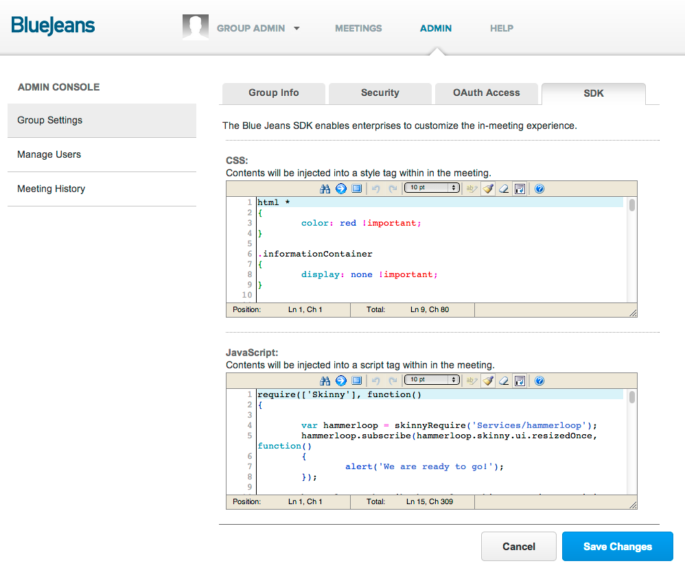

Want to customize your BlueJeans in meeting experience on the web?
BlueJeans gives developers the ability to inject customizations into the meeting room via the group admin interface. Users must be given group administrator privileges by Blue Jeans Network to utilize this functionality. Once done, users will see an ADMIN option in the banner when logged in. Clicking on that reveals several options including the SDK tab seen below. Contents added to the CSS or JavaScript textareas are injected into the web page that renders the meeting room immediately upon saving. Developers are responsible for the validity of changes made here as they can have a detrimental effect on the meeting experience if done improperly.

The meeting room is a JavaScript-based web application. It integrates various browser plugins and technologies to build a fully functional video conference experience. The SDK provides a way to inject your own JavaScript code into the meeting room for advanced integration needs.
The script is added directly into the page after other meeting room components are invoked. However, because of the asynchronous nature of the loading, integrations must conform to using a library loading technology known as RequireJS. RequireJS helps synchronize loading across multiple dependencies. Ultimately, to perform any type of interesting integration within the meeting room, you need to wait for the meeting room itself to signal it has loaded. This is done by using RequireJS to wait/depend on a module known as Skinny. Skinny is the internal code name for the web-based meeting client for Blue Jeans.
A simple example that binds to 2 different events that might be interesting for integrators. The basic flow is to use RequireJS to wait for Skinny to load. Upon completion, your function is invoked. This sample gets a pointer to the event mechanism of the meeting room, known as hammerloop. Then you can subscribe to various events that will occur in the user interface.
window.afterAppLoad(function()
{
require(['Services/hammerloop'], function(hammerloop) {
hammerloop.subscribe(hammerloop.skinny.ui.resizedOnce, function() {
alert('We are ready to go!');
});
hammerloop.subscribe(hammerloop.skinny.meeting.participants, function(part, action) {
alert('Roster updated!');
});
});
});
While not a practical recipe, its a nice way to visualize how the customization system works.
html *
{
color: red !important;
}
When a participant joins, they view a loading screen which has the name and photo of the meeting owner along the bottom. In some cases, as when scheduling with proxy users, this is not desired so you may hide that display.
.informationContainer
{
display: none !important;
}